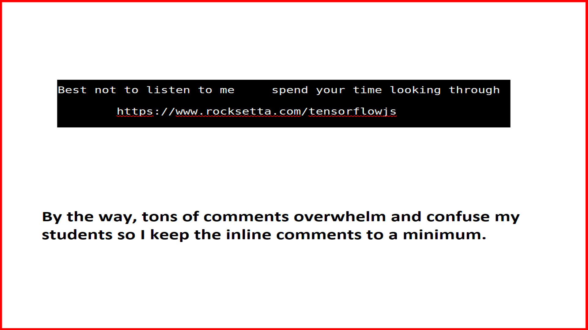
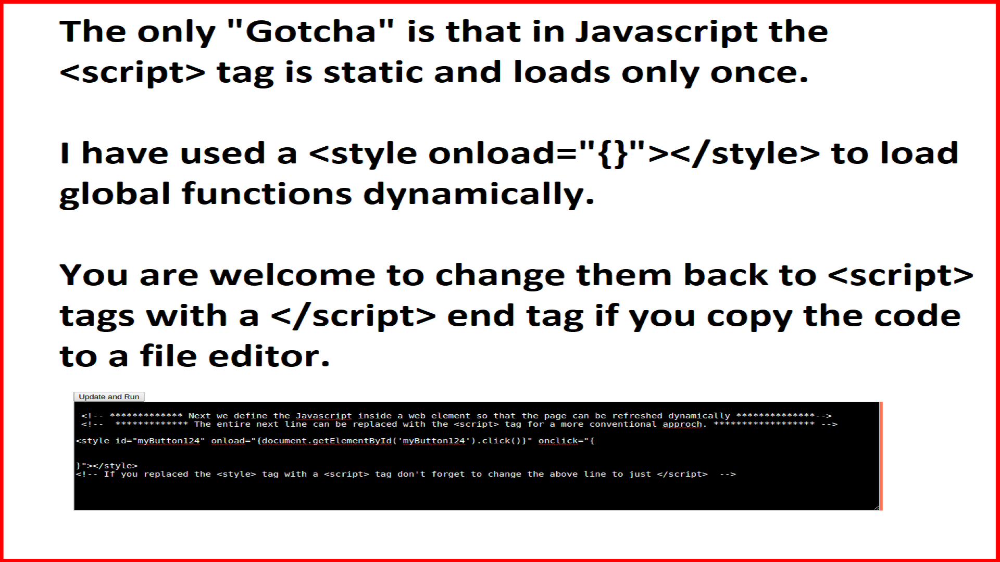
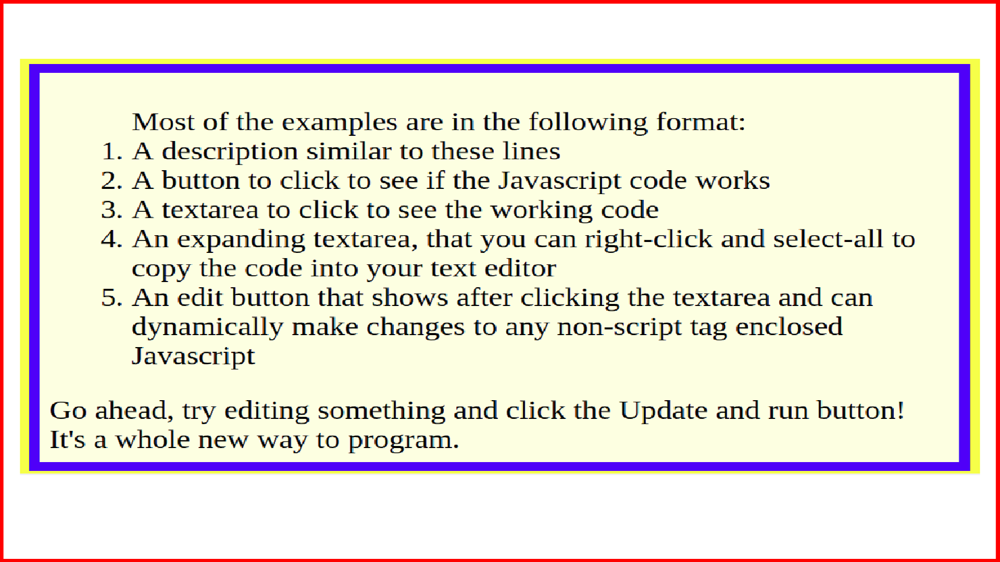
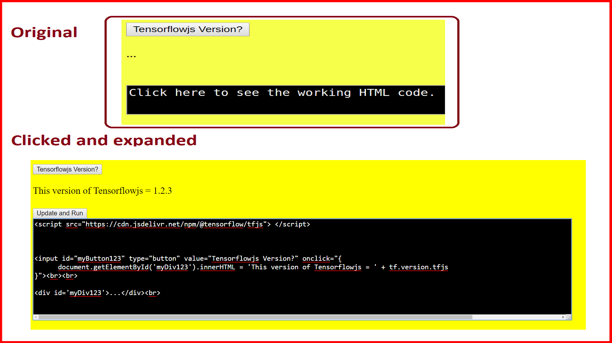
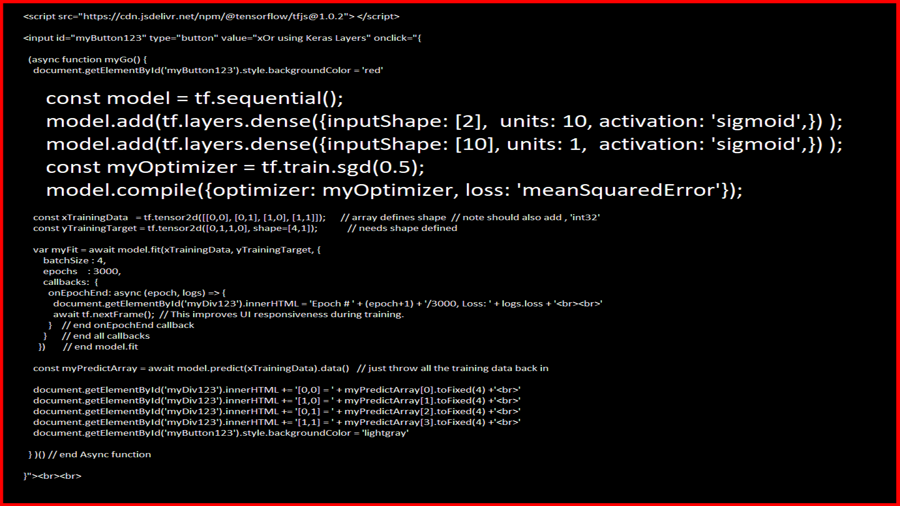
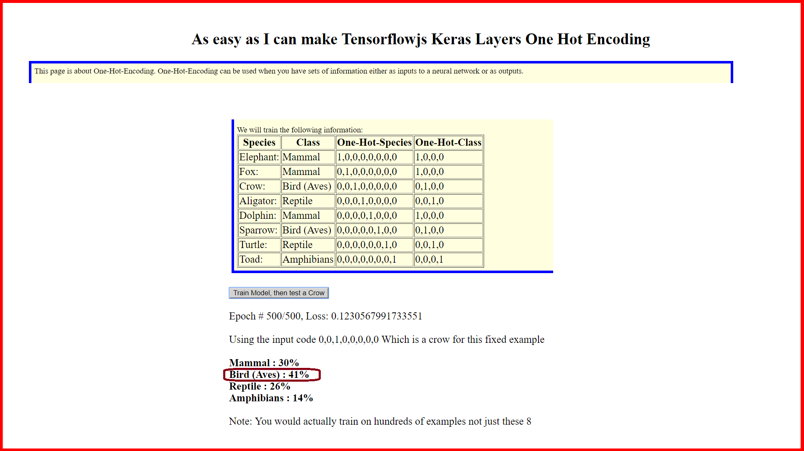
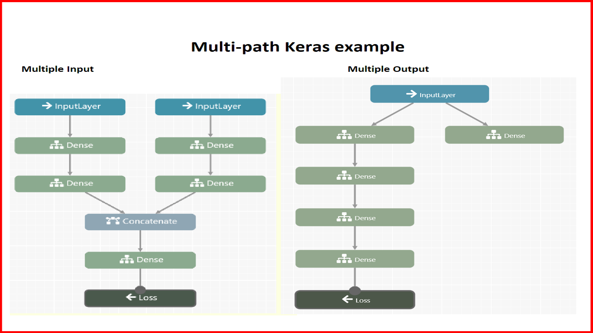
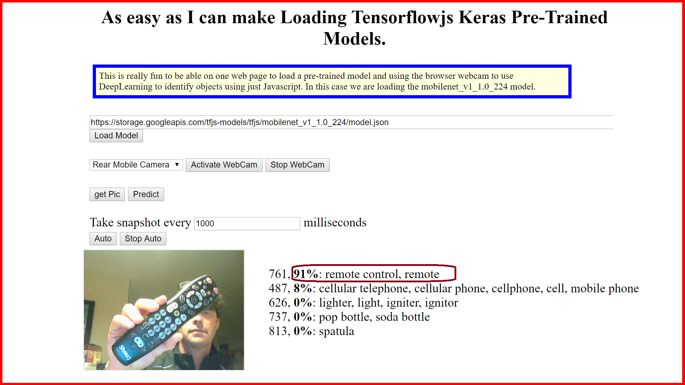

Lightening talk in Pecha Kucha format by Jeremy Ellis about tensorflowjs
Best just to go to the link at
https://www.rocksetta.com/tensorflowjs/
seconds per slide.
...
       
Github for this website at
https://github.com/hpssjellis/lightening-talk-Pecha-Kucha-tensorflowjs
This gitpages webpage at
https://hpssjellis.github.io/lightening-talk-Pecha-Kucha-tensorflowjs/